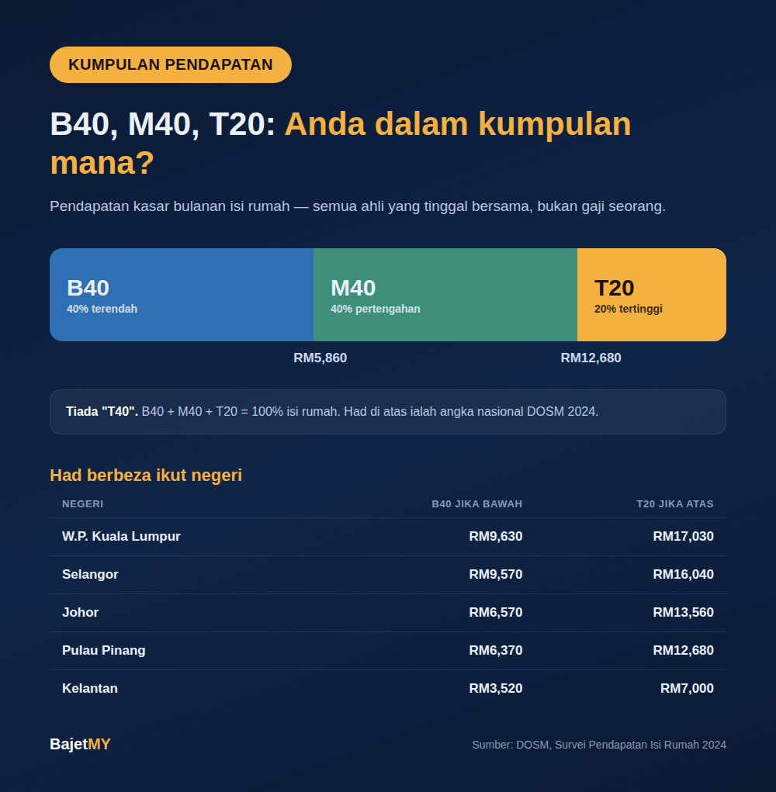

Kita selalu dengar istilah B40, M40 dan T20 — dalam berita bajet, syarat bantuan kerajaan, atau perbualan harian. Tapi ramai sebenarnya tak pasti apa maksudnya, macam mana ia dikira, dan kenapa seseorang yang "rasa M40" mungkin sebenarnya B40 (atau sebaliknya) bergantung pada negeri mereka tinggal.

Maksud ringkas
Semua isi rumah di Malaysia disusun ikut pendapatan, dari paling rendah ke paling tinggi, kemudian dibahagi kepada tiga kumpulan:
| Kumpulan | Maksud | Had pendapatan isi rumah bulanan (Malaysia) |
|---|---|---|
| B40 | Bottom 40% — 40% isi rumah berpendapatan terendah | Bawah RM5,860 |
| M40 | Middle 40% — 40% isi rumah pertengahan | RM5,860 – RM12,679 |
| T20 | Top 20% — 20% isi rumah berpendapatan tertinggi | RM12,680 ke atas |
Angka ini daripada Laporan Survei Pendapatan Isi Rumah 2024 oleh Jabatan Perangkaan Malaysia (DOSM).
Nota: tiada kumpulan "T40". Jumlahnya B40 + M40 + T20 = 100%.
Perkara yang ramai salah faham
1. Ia pendapatan isi rumah, bukan gaji seorang Kumpulan dikira berdasarkan jumlah pendapatan kasar semua ahli isi rumah yang tinggal bersama — gaji suami, isteri, anak yang bekerja, serta pendapatan lain seperti sewa atau perniagaan. Seseorang bergaji RM4,000 mungkin B40 jika bujang, tapi M40 jika pasangannya juga bekerja.
2. Had berbeza ikut negeri Kos sara hidup berbeza, jadi taburan pendapatan pun berbeza. Contohnya (DOSM 2024):
| Negeri | Had atas B40 | Had bawah T20 |
|---|---|---|
| W.P. Kuala Lumpur | RM9,630 | RM17,030 |
| Selangor | RM9,570 | RM16,040 |
| Johor | RM6,570 | RM13,560 |
| Pulau Pinang | RM6,370 | RM12,680 |
| Kelantan | RM3,520 | RM7,000 |
Maksudnya, isi rumah berpendapatan RM8,000 sebulan ialah M40 di peringkat nasional — tapi masih B40 jika tinggal di Kuala Lumpur atau Selangor.
3. Had berubah setiap kali survei baharu DOSM menjalankan survei ini secara berkala. Bila pendapatan isi rumah naik, had setiap kumpulan pun naik. Jadi kumpulan anda boleh berubah walaupun gaji tak berubah.
Kenapa kumpulan ini penting?
- Bantuan kerajaan — banyak program seperti bantuan tunai dan subsidi bersasar menggunakan pendapatan isi rumah sebagai syarat kelayakan
- Perancangan dasar — kerajaan menggunakan data ini untuk menilai jurang pendapatan dan merancang bajet
- Perancangan kewangan peribadi — tahu kedudukan anda membantu bandingkan kos sara hidup dan komitmen dengan isi rumah lain di negeri yang sama
Namun, setiap program bantuan ada syarat sendiri. Jangan anggap anda layak atau tidak layak hanya berdasarkan label B40/M40 — semak syarat rasmi program berkenaan.
Semak kumpulan anda
Guna kalkulator Kumpulan Pendapatan Bajet MY — masukkan pendapatan isi rumah bulanan dan negeri anda, dan ia tunjukkan sama ada anda B40, M40 atau T20, serta berapa jauh lagi ke kumpulan seterusnya.
Ringkasan
B40, M40 dan T20 membahagikan isi rumah Malaysia kepada 40% terendah, 40% pertengahan dan 20% tertinggi berdasarkan jumlah pendapatan isi rumah, bukan gaji seorang. Had berbeza mengikut negeri dan dikemas kini setiap survei DOSM — jadi semak berdasarkan negeri anda sendiri, bukan angka nasional sahaja.
Sumber
- Jabatan Perangkaan Malaysia (DOSM) — Laporan Survei Pendapatan Isi Rumah dan Kemudahan Asas 2024